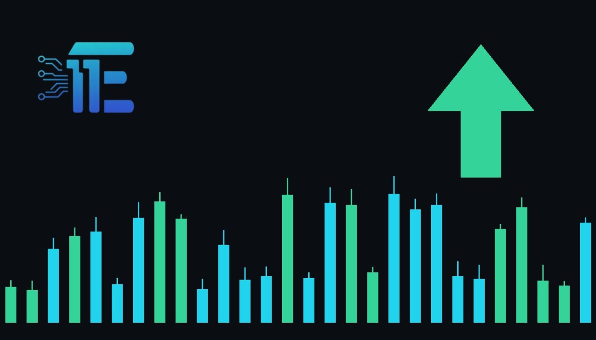

US Orders Saudi Diplomat Evacuation as Middle East Attacks Escalateសហរដ្ឋអាមេរិកបង្គាប់ឱ្យអ្នកការទូតចាកចេញពីអារ៉ាប៊ីសាអ៊ូឌីត ស្របពេលការវាយប្រហារកើនឡើង
XAU/USD impact: ▲ Bullishផលប៉ះពាល់លើ XAU/USD: ▲ ឡើង

The United States has ordered some diplomats to depart Saudi Arabia following lethal strikes on an airport and an oil field. Heightened geopolitical instability and threats to energy infrastructure typically stimulate safe-haven interest in gold.
អាមេរិកបានបង្គាប់ឱ្យអ្នកការទូតមួយចំនួនចាកចេញពីអារ៉ាប៊ីសាអ៊ូឌីត ក្រោយការវាយប្រហារលើព្រលានយន្តហោះនិងទីតាំងប្រេង។ ភាពតានតឹងផ្នែកសន្តិសុខនេះអាចជួយបង្កើនតម្រូវការទិញមាសទុកជាទ្រព្យសុវត្ថិភាព។
The United States government has directed certain diplomats to leave Saudi Arabia as Houthi attacks escalate in the region. This security guidance to American officials followed lethal strikes that targeted an airport and an oil field, claiming at least three lives.
រដ្ឋាភិបាលសហរដ្ឋអាមេរិកបានណែនាំឱ្យអ្នកការទូតមួយចំនួនចាកចេញពីប្រទេសអារ៉ាប៊ីសាអ៊ូឌីត ដោយសារការវាយប្រហាររបស់ក្រុម Houthi កាន់តែរីករាលដាលខ្លាំងនៅក្នុងតំបន់។ ការជូនដំណឹងអំពីសន្តិសុខដល់មន្ត្រីអាមេរិកនេះ បានកើតឡើងបន្ទាប់ពីមានការវាយប្រហារលើព្រលានយន្តហោះ និងទីតាំងប្រេង ដែលបណ្តាលឱ្យមនុស្សយ៉ាងហោច 3 នាក់បានបាត់បង់ជីវិត។
For bullion market participants, military and diplomatic escalations in the Middle East represent a primary catalyst for safe-haven asset allocation. Heightened uncertainty surrounding regional security often prompts investors to shift capital toward gold (XAU/USD) as a store of value. Furthermore, strikes hitting critical energy infrastructure such as oil fields inject fresh concerns over global fuel supply and transport logistics.
សម្រាប់អ្នកចូលរួមក្នុងទីផ្សារលោហធាតុមានតម្លៃ ការកើនឡើងនៃជម្លោះយោធានិងការទូតនៅមជ្ឈិមបូព៌ា គឺជាកត្តាជំរុញចម្បងមួយនៃលំហូរទុនចូលទៅកាន់ទ្រព្យសម្បត្តិសុវត្ថិភាព។ ភាពមិនប្រាកដប្រជាជុំវិញសន្តិសុខក្នុងតំបន់ ជាទូទៅតែងតែជំរុញឱ្យវិនិយោគិនបង្វែរដើមទុនទៅរកមាស (XAU/USD) ដើម្បីការពារតម្លៃទ្រព្យ។ លើសពីនេះ ការវាយប្រហារលើហេដ្ឋារចនាសម្ព័ន្ធថាមពលសំខាន់ៗ ដូចជាទីតាំងប្រេង ក៏បានបង្កើនការព្រួយបារម្ភជាថ្មីអំពីការផ្គត់ផ្គង់ប្រេងឥន្ធនៈសកលផងដែរ។
The economic transmission channel also involves inflation expectations and central bank policy. Sustained threats to energy installations can fuel inflation pressures, which traditionally boosts gold's appeal as an inflation hedge. However, elevated price pressures may simultaneously reinforce market expectations for tighter monetary conditions, where rising bond yields and a firmer US dollar can restrict bullion's upward momentum.
ច្រករបៀងបញ្ជូនឥទ្ធិពលមកលើសេដ្ឋកិច្ចក៏រួមបញ្ចូលទាំងការរំពឹងទុកលើអតិផរណា និងគោលនយោបាយធនាគារកណ្តាលផងដែរ។ ការគំរាមកំហែងជាបន្តបន្ទាប់លើទីតាំងថាមពលអាចរុញច្រានសម្ពាធអតិផរណាឱ្យកើនឡើង ដែលតាមប្រវត្តិសាស្ត្រកន្លងមក តែងតែជួយបង្កើនភាពទាក់ទាញរបស់មាសក្នុងនាមជាឧបករណ៍ការពារហានិភ័យអតិផរណា។ ទោះជាយ៉ាងណាក៏ដោយ សម្ពាធតម្លៃកើនឡើងក៏អាចពង្រឹងការរំពឹងទុកក្នុងទីផ្សារថាអត្រាការប្រាក់នឹងបន្តស្ថិតក្នុងកម្រិតខ្ពស់ ដែលទិន្នផលសញ្ញាបណ្ណកើនឡើង និងដុល្លារអាមេរិកឡើងថ្លៃ អាចដាក់កំហិតលើការឡើងថ្លៃរបស់មាស។
Under typical market dynamics, further deterioration of regional security or additional strikes on vital facilities would likely reinforce safe-haven demand and lend support to gold. In contrast, if diplomatic tensions subside and energy operations proceed without disruption, the geopolitical risk premium in bullion could rapidly dissipate, shifting focus back to macroeconomic factors.
តាមទិដ្ឋភាពទីផ្សារជាក់ស្តែង ប្រសិនបើសន្តិសុខក្នុងតំបន់កាន់តែធ្លាក់ចុះដុនដាប ឬមានការវាយប្រហារបន្ថែមលើទីតាំងសំខាន់ៗ នោះតម្រូវការទិញមាសទុកជាទ្រព្យសុវត្ថិភាពទំនងជានឹងបន្តកើនឡើងដើម្បីគាំទ្រតម្លៃមាស។ ផ្ទុយទៅវិញ ប្រសិនបើភាពតានតឹងផ្នែកការទូតថយចុះ ហើយប្រតិបត្តិការថាមពលដំណើរការជាធម្មតាដោយគ្មានការរំខាន នោះបុព្វលាភហានិភ័យភូមិសាស្ត្រនយោបាយលើមាសអាចនឹងថយចុះយ៉ាងឆាប់រហ័ស ដោយបង្វែរការយកចិត្តទុកដាក់ទៅលើកត្តាម៉ាក្រូសេដ្ឋកិច្ចវិញ។
Market participants should continue monitoring official communications regarding the safety of diplomatic personnel, potential developments surrounding regional energy facilities, and fluctuations in US Treasury yields and currency markets.
អ្នកជួញដូរគួរតែបន្តតាមដានការប្រកាសផ្លូវការទាក់ទងនឹងសុវត្ថិភាពរបស់មន្ត្រីការទូត ការវិវត្តជុំវិញហេដ្ឋារចនាសម្ព័ន្ធថាមពលក្នុងតំបន់ ព្រមទាំងការប្រែប្រួលនៃទិន្នផលសញ្ញាបណ្ណរតនាគារអាមេរិក និងទីផ្សាររូបិយប័ណ្ណ ដើម្បីទទួលបានសញ្ញាណច្បាស់លាស់បន្ថែមទៀត។
Key takeawaysចំណុចសំខាន់ៗ
- Washington ordered certain diplomats to exit Saudi Arabia following lethal strikes on an airport and an oil field.
- ទីក្រុងវ៉ាស៊ីនតោនបានបង្គាប់ឱ្យអ្នកការទូតមួយចំនួនចាកចេញពីអារ៉ាប៊ីសាអ៊ូឌីត បន្ទាប់ពីការវាយប្រហារលើព្រលានយន្តហោះ និងទីតាំងប្រេងបានសម្លាប់មនុស្សយ៉ាងហោច 3 នាក់។
- Geopolitical escalation and potential energy supply threats typically enhance safe-haven demand for gold (XAU/USD).
- ការកើនឡើងហានិភ័យភូមិសាស្ត្រនយោបាយ និងការគំរាមកំហែងដល់ថាមពល ជាទូទៅជួយបង្កើនតម្រូវការទ្រព្យសម្បត្តិសុវត្ថិភាពសម្រាប់មាស (XAU/USD)។
- Gold faces balancing forces between safe-haven support and the yield impact of energy-driven inflation risks.
- មាសប្រឈមនឹងតុល្យភាពរវាងការគាំទ្រពីតម្រូវការទ្រព្យសុវត្ថិភាព និងសម្ពាធពីទិន្នផលសញ្ញាបណ្ណប្រសិនបើហានិភ័យថាមពលរុញច្រានអតិផរណា។
Original commentary by THE MARKET CODE, based on public reporting from BBC News. Written with the help of AI. Educational only, not financial advice.
មតិវិភាគដើមដោយ THE MARKET CODE ផ្អែកលើការរាយការណ៍សាធារណៈពី BBC News។ សរសេរដោយមានជំនួយពី AI។ មាតិកាអប់រំប៉ុណ្ណោះ មិនមែនជាដំបូន្មានហិរញ្ញវត្ថុទេ។